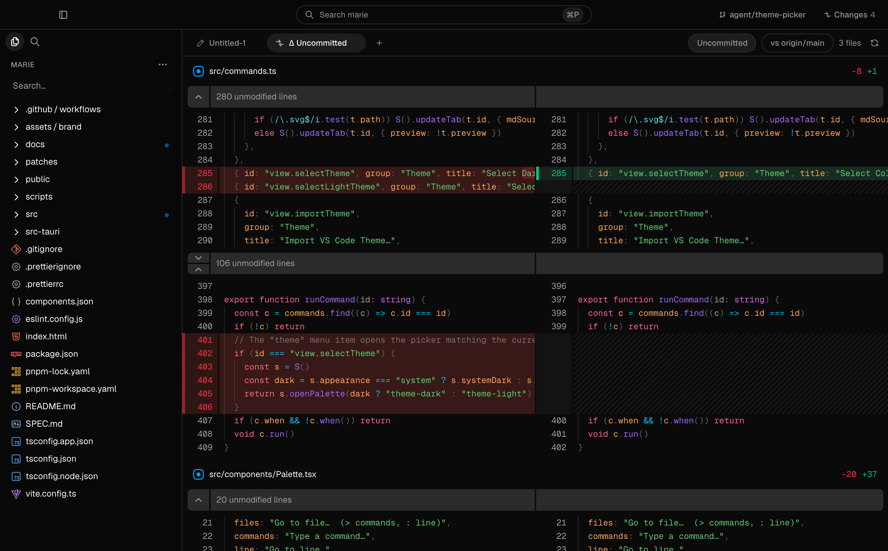
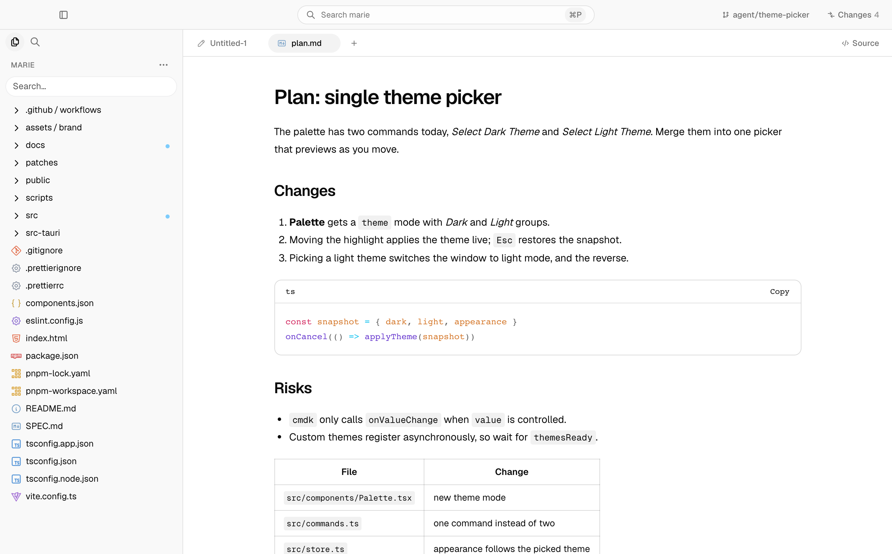

Agents write the code now. Marie is where you read it: the diff, the plan, the file you want to check. It opens instantly and gets out of the way.

origin/main. ⇧⌘GMarie isn't competing with VS Code or Zed. Almost nobody writes code by hand anymore. Agents do.
But you still have to look at what they made. You want to read the diff before you merge, read the plan before you approve it, and open one file on a server without setting up a whole workspace. An IDE is too much for that, and a browser tab is too little.
Marie is for the human part: reading. It's a fast, quiet Mac app for code, diffs and Markdown, with just enough editing to fix what you spot.
Uncommitted, staged, or your whole branch against origin/main. Split or unified, every changed file on one page.
Plans, specs and READMEs rendered with real typography, tables and highlighted code. Flip to source any time.
Every action lives in the command palette. Jump to any file, line or theme without touching the mouse.
Open ssh://host/path and browse a remote repo like a local one. Uses your existing ~/.ssh/config.
Spot a typo in the diff? Fix it right there and save. Editing is on by default, it just isn't the point.
Built on Ghostty's terminal engine, in the folder you have open. Locally or on the remote host.
Light or dark, Pierre's themes built in, or bring any VS Code theme you already own.
